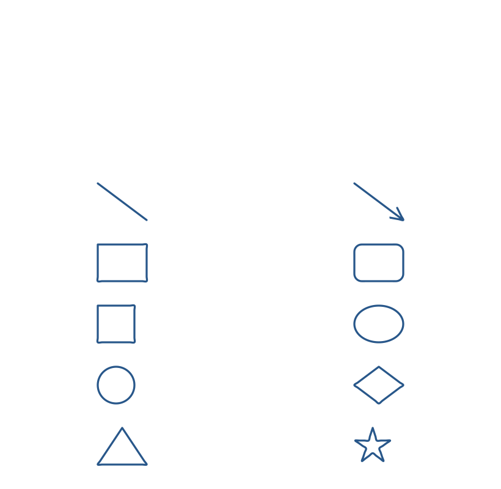

Çizim sekmesinde bir şekil seçin, sonra sayfada sürükleyin. Her şekil düzenlenebilir bir mürekkep çizgisidir. Taşımak ya da boyutunu değiştirmek için seçin, ya da kaldırmak için Çizgiyi geri al'ı kullanın.
On şekil, Şekiller grubuyla aynı iki sütunlu sırada dizilidir.
| Sol | Sağ |
|---|---|
| Çizgi | Ok |
| Dikdörtgen | Yuvarlak köşeli |
| Kare | Elips |
| Daire | Elmas |
| Üçgen | Yıldız |
Sonraki: El yazısı ve çizim.
Bu sayfa bir yapay zekâ modeli tarafından çevrildi. Düzeltmeler memnuniyetle karşılanır.
